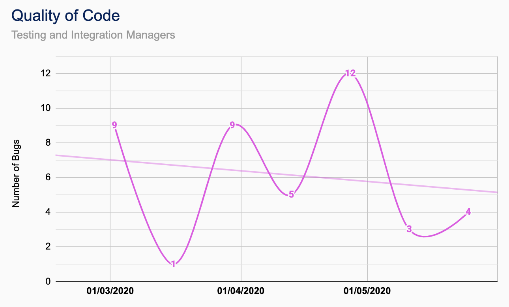
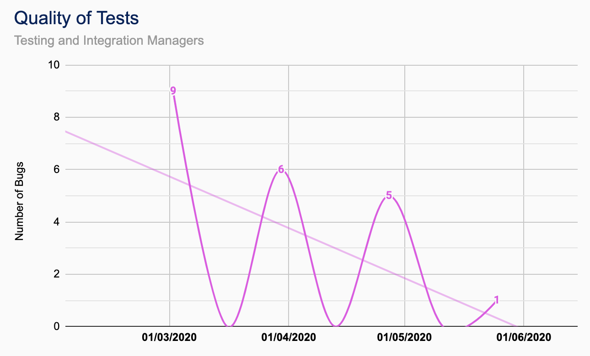

Contributions
| Documentation |
|---|
| CUBIXEL QA Manual |
| TutorPoint Functional Specification |
| TutorPoint Testing and Integration Plan |
| TutorPoint & Goose Design Software - Development Agreement |
| TutorPoint |
|---|
| Opening, Parsing and Validating Presentation XML Files |
| Creating Presentation Objects |
| Text, Image and Video Handlers |
| Displaying and Controlling Presentations |
| Sharing Presentations Between Clients |
| Other |
|---|
| Integrated outsourced code from Goose Software (Audio and Graphics Handlers) |
| Developed Modified Text and Image Handlers for Goose Software |
TutorPoint Breakdown


QA Metrics
-

Quality of Code
Number of bugs found in code in a working week via exploratory testing of the simulated program before code is subject to testing. -

Quality of Tests
Expected test outcome against the actual test outcome, record the proportion that arises due to insufficient module tests via exploratory testing for a working week. -

User Story Integration Latency
Measure and record the length of time between each user story being submitted for ‘done’ exploratory testing and being integrated into the development repository each iteration.